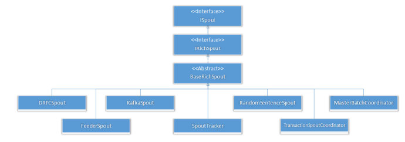

+++ title = "Storm 编程总结" slug = "storm-summary" tags = ["distributed system","project"] date = "2018-11-27T15:51:51+08:00" description = ""
+++
基本类
Spout
Spouts represent the source of data in Storm. You can write spouts to read data from data sources such as database, distributed file systems, messaging frameworks etc.

BaseRichSpout is an important class and all your Java spouts should extend it.
main methods
open− Provides the spout with an environment to execute. The executors will run this method to initialize the spout.
private SpoutOutputCollector spoutOutputCollector; public void open(Map conf, TopologyContext context, SpoutOutputCollector collector){ this.spoutOutputCollector = collector; }nextTuple− Emits the generated data through the collector.
public void nextTuple(){ this.spoutOutputCollector.emit(values); // it should sleep for at least one millisecond to reduce load on the processor before returning. Utils.sleep(100); }declareOutputFields− Declares the output schema of the tuple.
public void declareOutputFields(OutputFieldsDeclarer declarer) { declarer.declare(new Fields("fieldName")); }other methods
close− This method is called when a spout is going to shutdown.ack− Acknowledges that a specific tuple is processed.fail− Specifies that a specific tuple is not processed and not to be reprocessed.ackandfailare only called for reliable spouts.
Bolt
- 主要提供两个类，分别为
BaseRichBolt和BaseBasicBoltBaseBasicBolttuples are automatically anchored and acknowledgedBaseRichBoltwe have to do that ourselves- 参考这里
- 不考虑overhead，使用
BaseBasicBolt即可
BaseRichBolt
主要实现
prepare、execute、declareOutputFields三个接口注意，需要对
OutputCollector进行emit和ack操作public class SplitSentence extends BaseRichBolt { OutputCollector _collector; public void prepare(Map conf, TopologyContext context, OutputCollector collector) { _collector = collector; } public void execute(Tuple tuple) { String sentence = tuple.getString(0); for(String word: sentence.split(" ")) { _collector.emit(tuple, new Values(word)); } _collector.ack(tuple); } public void declareOutputFields(OutputFieldsDeclarer declarer) { declarer.declare(new Fields("word")); } }
BaseBasicBolt
A lot of bolts follow a common pattern of reading an input tuple, emitting tuples based on it, and then acking the tuple at the end of the
executemethod. These bolts fall into the categories of filters and simple functions简单的函数时使用BaseBasicBolt更简单，会自动acking，例如：
public class SplitSentence extends BaseBasicBolt { public void execute(Tuple tuple, BasicOutputCollector collector) { String sentence = tuple.getString(0); for(String word: sentence.split(" ")) { collector.emit(new Values(word)); } } public void declareOutputFields(OutputFieldsDeclarer declarer) { declarer.declare(new Fields("word")); } }
This implementation is simpler than the implementation from before and is semantically identical. Tuples emitted to
BasicOutputCollectorare automatically anchored to the input tuple, and the input tuple is acked for you automatically when the execute method completes.
TopologyBuilder
指定topology的spout和bolt，以及对应的field
TopologyBuilder builder = new TopologyBuilder();
builder.setSpout("gender", genderSpout);
builder.setSpout("age", ageSpout);
builder.setBolt("join", new SimpleJoinBolt(new Fields("gender", "age")))
.fieldsGrouping("gender", new Fields("id"))
.fieldsGrouping("age", new Fields("id"));
stream grouping
- Shuffle grouping - This type of grouping distributes tuples equally and randomly to all the available bolt tasks.
- Fields grouping - This type of grouping makes sure that tuples with same field will go to same bolt task. For example, if the stream is grouped by "word" field, tuples with same "word" value will always go to same bolt task.
- Partial Key grouping - The stream is partitioned by the fields specified in the grouping, like the Fields grouping, but are load balanced between two downstream bolts, which provides better utilization of resources when the incoming data is skewed.
- All grouping - In this grouping techniques, keys are not load balanced and all the stream goes to all of the downstream bolt tasks.
- Global grouping - In this grouping techniques, all the stream goes to any one of the downstream bolt task. This needs to be used with caution as this will serialize the processing of tuples that can result into slow processing of tuples.
- None grouping - This grouping is just an indicator that you don't care about grouping and would like to go with default. Currently, default grouping is shuffle grouping and may change in future releases so this should be used carefully.
- Direct grouping - In this grouping, producer of a tuple decides which task of the consumer will receive the emitted tuple. This is only applicable for streams declared as Direct stream.
- Local or shuffle grouping - Since a worker process can have multiple tasks, this grouping will shuffle to the in-process tasks. In case, a worker process is not configured to run multiple tasks, this will act as normal shuffle grouping.
window相关
joinBolt
Storm可靠性
OutputCollector
- Storm为了简化编程，它提供了BaseBasicBolt，这个类提供的collector不是一般的OutputCollector，而是BasicOutputCollector，通过BasciOutputCollector，已经实现了锚定和结果通知。我们只要继承BaseBasicBolt来定义Bolt就可以了。
- 发送消息的时候，只要collector.emit(newtuple); 只要指定新产生的tuple就以了，无需指定源tuple。
- 发送结果的时候，如果成功了，可以不需要写任何代码；如果失败了，则抛出一个FailedException异常。